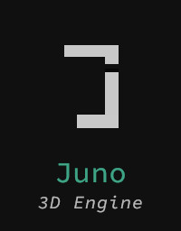

 The project I am currently working on is a physics simulation engine with real-time rendering in Vulkan, with the goal of running high-volume particle simluations. To accomplish this, I've opted to use Compute Shaders to GPU-accelerate the motion integration of particles, which allows a nearest-neigbors algorithm to greatly take advantage of the high thread counts in GPUs, and is faster than CPU-based implementations. You can view the project here.
ParrotMessenger is a new side project I'm working on to build a fairly simple peer / group messenger, and has been a great tool for learning the basics of computer networking.
Eros is a fairly small math library, but that also comes with implementations of some useful data structures.
ORBT was my first dive into graphics programming in OpenGL using the Lightweight Java Game Library (LWJGL). This was a great learning experience for me to get a grasp on the basics of modern OpenGL and rendering techniques.
Haskmat is a pretty simple Haskell library that has some data structures that wouldn't normally be found in the land of functional programming. Mostly written as a joke.